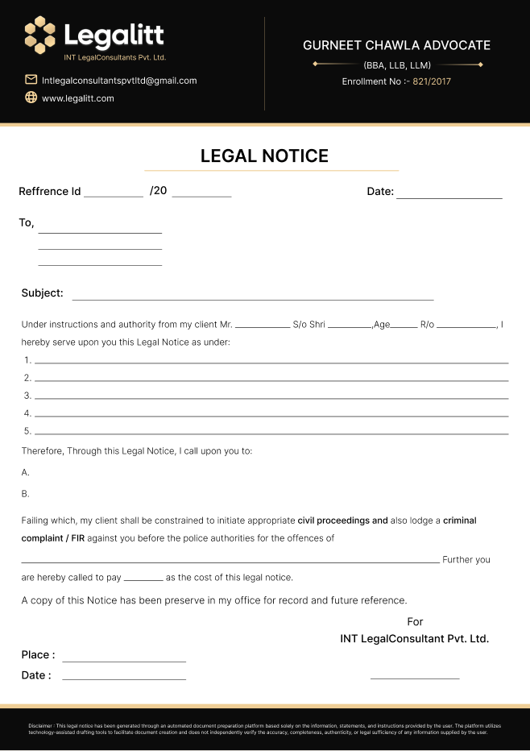
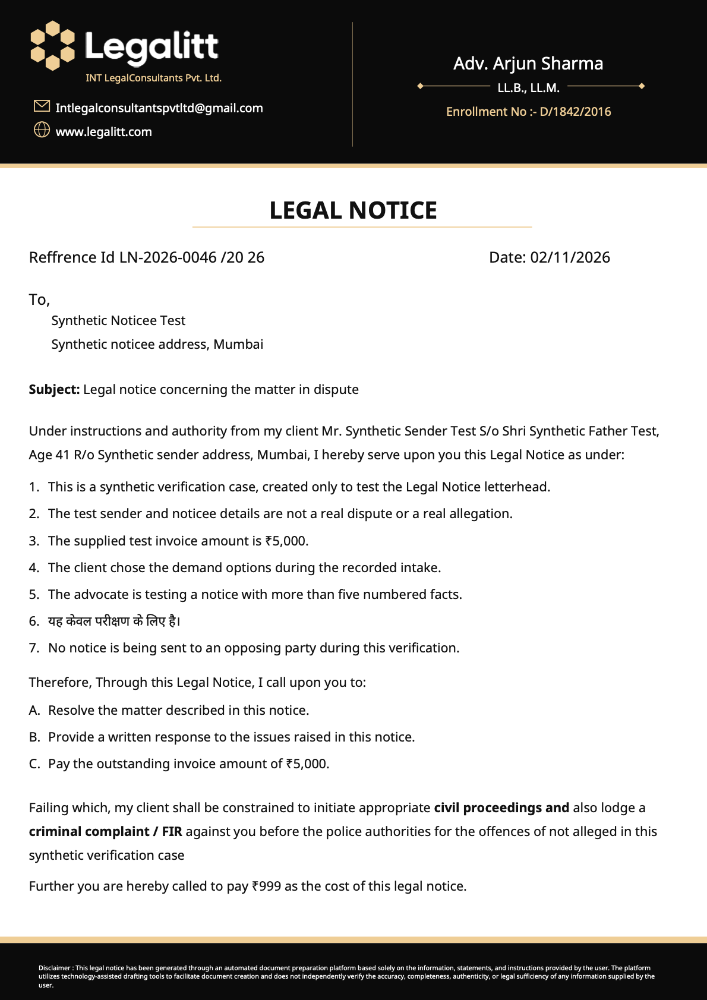
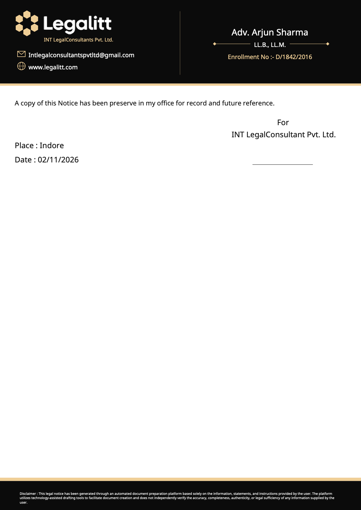

Case LN-2026-0046 · Synthetic local verification · Open the selectable PDF



The same document width is used for comparison. Seven real saved draft paragraphs and three saved client demands flow onto a second page; nothing is cut off. “Reffrence Id” and “has been preserve in my office” remain exactly as supplied.